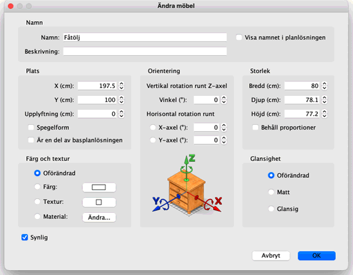
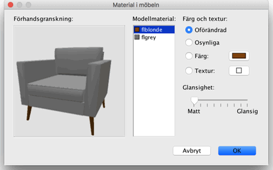

|
|
�ndra m�bler | ||
|
Du kan �ndra position, storlek och vinkel p� hemmets m�bler endera med hj�lp av musen
eller med menyn M�bler > �ndra... N�r en m�bel �r vald i planl�sningen kan du ocks� �ndra dess storlek, upplyftning eller vinkel med en av de fyra mark�rer som dyker upp i h�rnen p� den valda m�beln.
|

|
|
N�r muspekaren �r p� ett av dessa h�rn �ndras den f�r att visa att du kan dra och
sl�ppa det h�rnet f�r att �ndra den egenskapen av m�beln. N�r du trycker ner
musknappen dyker en tipsruta upp f�r att visa v�rdet p� den/de egenskap/er som
�ndras. En m�bel kan ocks� �ndras med hj�lp av dess inst�llningsruta genom att dubbelklicka p� den i planl�sningen eller m�bellistan, eller genom att v�lja M�bler > �ndra... efter att du valt den. 
I inst�llningsrutan f�r m�beln kan du �ndra dess namn, abskissan (X) och ordinatan (Y)
f�r dess centrum, h�jden �ver golvet fr�n dess botten, dess bredd, djup, h�jd, f�rg,
textur eller glansighet, dess synlighet och rotationsvinklar, samt om namnet ska synas
i planl�sningen och om 3D-modellen ska speglas. Det g�r inte att rotera d�rrar,
f�nster, trappor eller grupper runt en horisontell axel.  Dialogrutan Material i m�beln visar en lista av material som du kan �ndra. Eftersom material kanske inte alltid har glasklara beteckningar (som bone2 ist�llet f�r madrass eller flyellow ist�llet f�r ram i f�reg�ende bild) s� visas en f�rhandsvisning i 3D med de f�rg- och textur�ndringar som du gjort. Du kan ocks� rotera objektet i f�rhandsvisningen med hj�lp av musen om det beh�vs. |
|